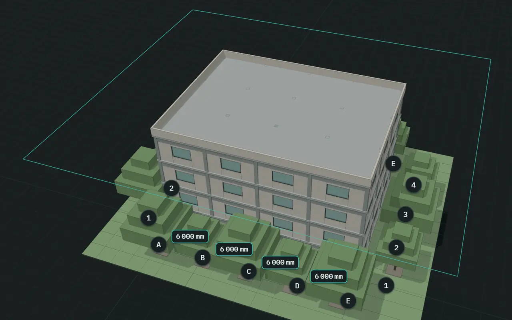
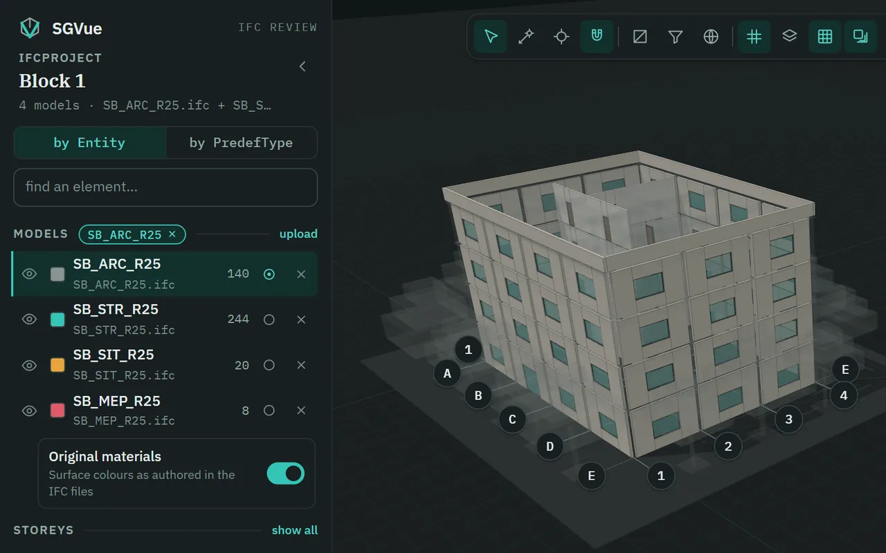
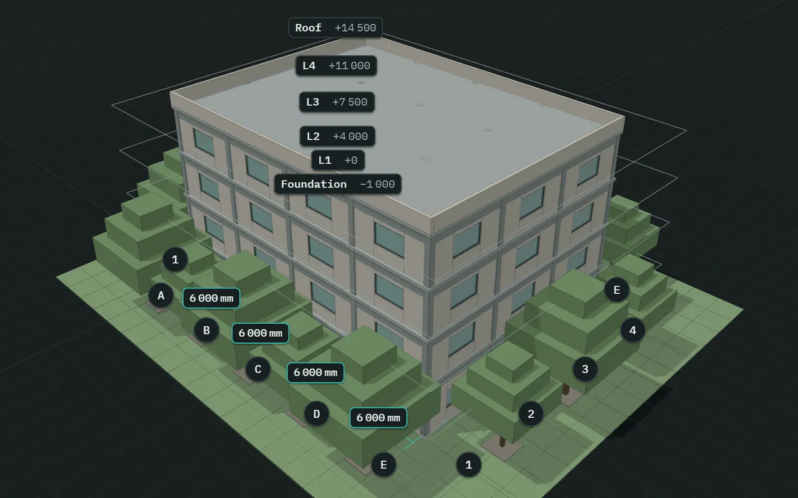
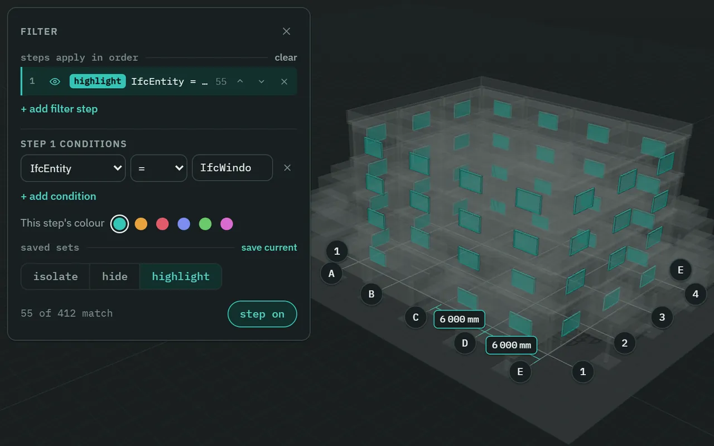
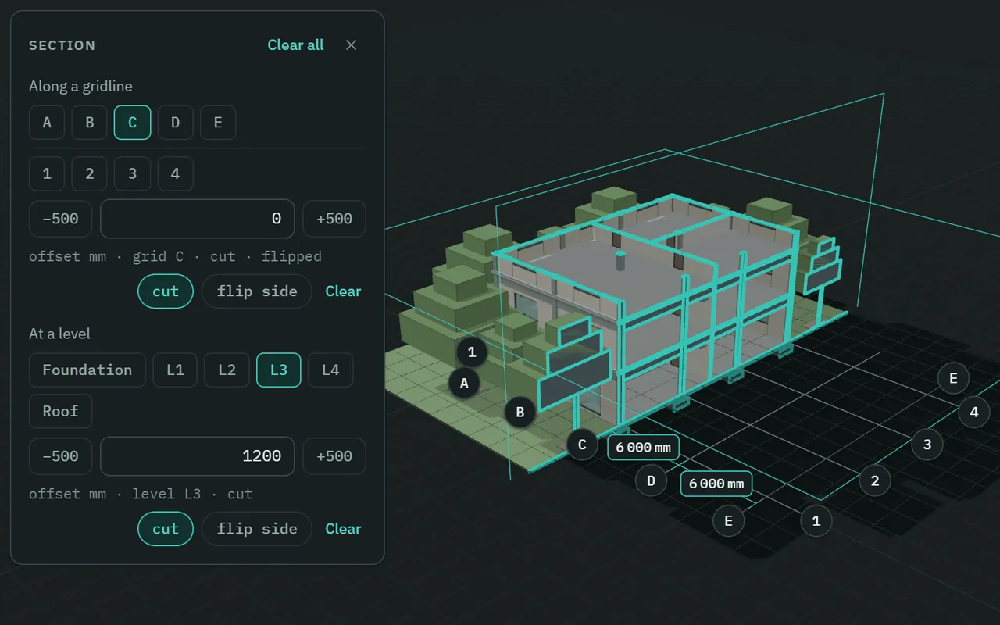
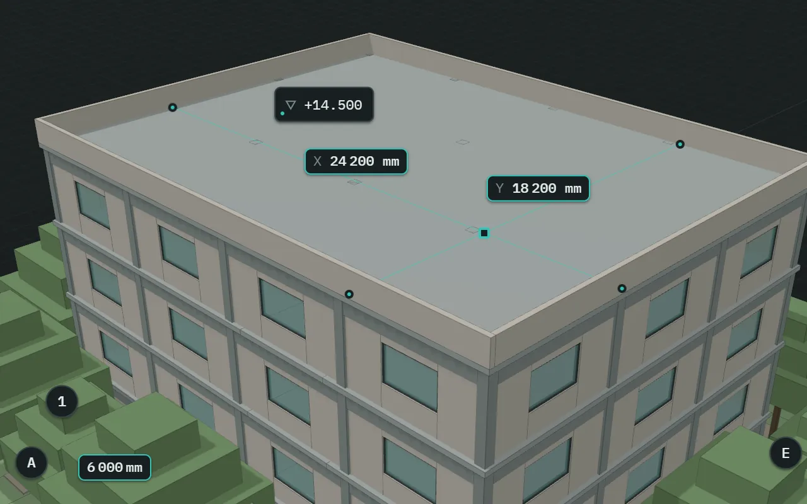
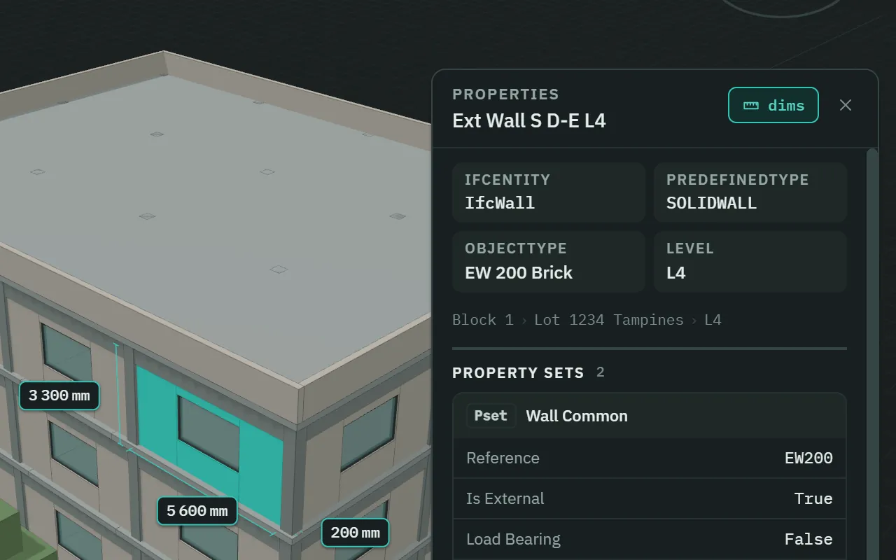
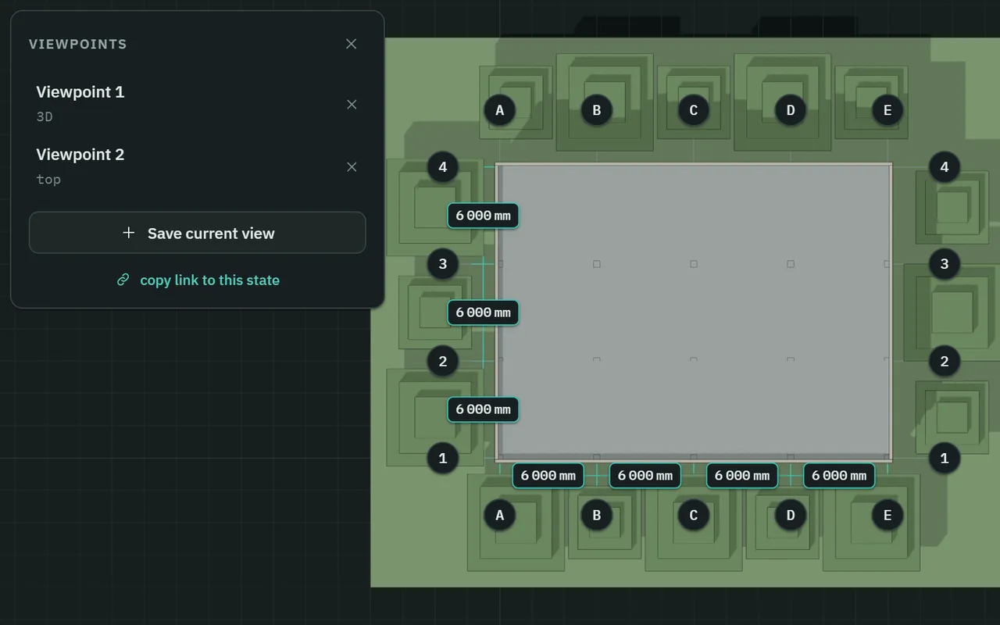
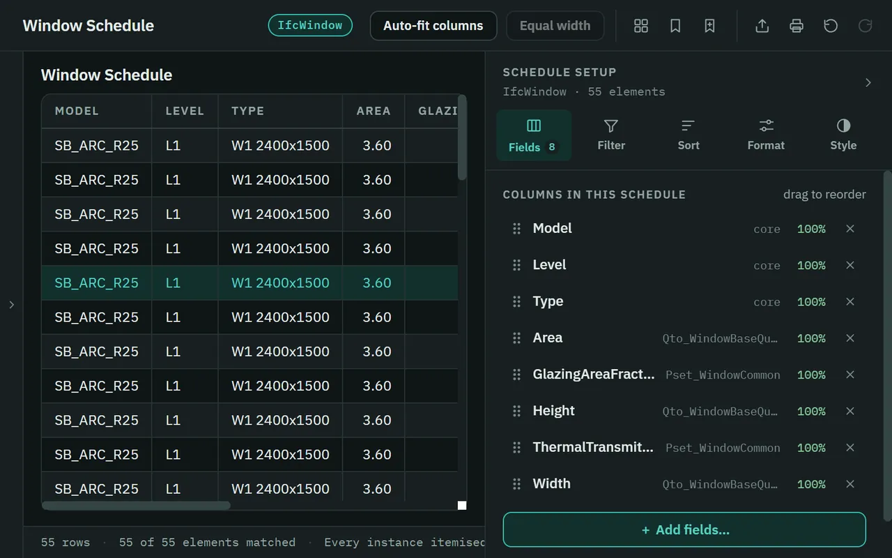

Review IFC models without changing a thing.
SGVue is a read-only IFC viewer for BIM coordination review. Open several models as one federation, walk the storeys and grids, cut sections, build schedules and ask questions in plain words. Your models stay on your computer.

What it does
Look closely, change nothing.
Eight things a reviewer does all day. Every picture is SGVue itself, on its built-in demo building.
-
Several models, one federation
Open the architecture, structure, services and site files together and review them as one model. Each keeps its own eye, colour and element count; activate one and the others fade to grey.
.ifc.ifczipIFC2X3IFC4IFC4.3

-
Storeys, gridlines and dimensions
Hide a storey with its eye, or click its name to see it alone. Gridlines carry their bubbles, and the spacing between neighbours is dimensioned in millimetres. Level tags mark each storey’s elevation.
G gridlinesL levels

-
Filter by any property
Stack up filter steps that isolate, hide or highlight — by IFC class, type, level or any property the file carries. Ask for what is missing as well: Fire Rating is empty finds the walls nobody rated. Save a stack as a set and use it again.
=≠contains><empty

-
Two section cuts at once
Cut along a gridline and at a level at the same time, each with its own offset, flip side and Clear. Everything a plane passes through is outlined in a thick accent line, so the cut reads at a glance.
−500+500flip sideClear all

-
Spot levels and laser measurements
Click a surface with the spot tool to pin its level, like +14.500; click the tag for the full E, N and Z. The laser meter measures X, Y and Z from a point, snapping to corners and edges.
C spotM laserS snap

-
Every property, as authored
Select an element and read what the file says about it: class, type and level, its property sets and quantities, GlobalId, material, related elements and sizes. Property and quantity values are kept as the file authored them, and type-level property sets are included.
PsetQtoGlobalId

-
Viewpoints and a share link
Save a viewpoint — the camera, both section planes and everything hidden or filtered — and return to it with one click. copy link to this state puts an
sgvue://link on the clipboard that reopens the same view wherever the same files are in the same place.sgvue://double-click to rename

-
Schedules, in a window of their own
Revit-style schedules of any IFC class: choose the fields, sort, group, total, filter and add calculated columns. Click a row to select it in 3D, colour the model by a column, and export to Excel or CSV when you are done.
.xlsx.csvtemplates

The assistant
Meet Vee.
Ask a question in plain words and watch Vee work: it reads the models, narrows to what you asked about, checks, and answers. When it has found elements, the answer usually carries a row for each level, and a click on a row selects what it counted.
Replay of the Ask Vee panel on the demo building — not a live assistant.
Vee
4 models, 412 elements, 6 storeys. No data-completeness issues found.
You
Which walls have no thermal transmittance?
Veechecked 80 walls · 8s
24 of 80 walls have no Thermal Transmittance. 12 are in SB_ARC_R25 and 12 in SB_STR_R25.
- L15 walls
- L25 walls
- L35 walls
- L45 walls
- Roof4 walls
24 found
What you are watching
- AskYou type a question in plain words: “Which walls have no thermal transmittance?”
- SendThe line lifts out of the composer into the transcript, and the send button becomes a stop button.
- ThinkingVee appears beside its name. “Thinking” shimmers until the answer.
- ReadingVee reads the four models: one square for each of the 412 elements.
- FilteringIt narrows to what you asked about. The 80 walls regroup; the rest drop away.
- CheckingA beam scans the walls. Each one with no thermal transmittance lights up, and the count climbs to 24.
- Answer“24 of 80 walls have no Thermal Transmittance”, with its status: checked 80 walls · 8s.
- DoneOne row for each level that holds a match. In SGVue, clicking a row selects the walls it counts.
The numbers are the demo building’s own: 4 models, 412 elements, 80 walls. The wording of a real answer is the assistant’s, and will differ.
-
It can do most of what you can
Show, hide and isolate. Colour by any property. Cut sections, move the camera, save viewpoints. Build a schedule and bring up its export for you to save. Place spot levels and measurements.
-
It asks first
Anything that opens or unloads a file, copies to the clipboard, prints or deletes is only ever proposed. You see exactly what will happen, and it is your click that does it.
-
Revert puts it back
A reply that changed the view carries revert. It puts back what that reply changed in the view, and only that.
-
It can never change your model
Vee looks and reports. It has no tool that writes to an IFC file, and neither has anything else in SGVue.
-
It runs on your own API key
Vee needs an Anthropic API key of your own, set in SGVue’s Preferences…. Your computer’s own secret store encrypts it, and SGVue never shows it again. Without a key, nothing is sent and the rest of SGVue works fully.
-
What is sent when you ask
Your question, a summary of the model’s vocabulary, a short description of the current view, and what Vee’s look-ups return. Never the IFC file. Preferences shows the exact last request under Data sent to AI.
Private and read-only
Private by construction.
A viewer earns trust by what it cannot do. These are not settings; they are how SGVue is built. The code that makes these promises is public: SGVue’s source on GitHub.
This computer
IFC filesSGVue
opened, read and drawn here
never written · never uploaded
GitHub — one version check when SGVue starts.No query, no body, no cookie. Nothing about your files or models.
Anthropic — Ask Vee, and only with your own API key.Your question, the model’s vocabulary, and what its look-ups return.
-
It only reads
There is no “save model”, no export to IFC and no tool that edits a name, a property or geometry. The write functions of the IFC library it reads with are switched off before a file is opened, and an automated check fails the build if any code tries to use them.
-
Your models stay on your computer
Files are opened, parsed and drawn locally. No file is uploaded, and SGVue keeps no copy of a model: it remembers where your recent files are, not what is in them. There is no telemetry.
-
What touches the network
To view models, nothing. When SGVue starts it asks GitHub once which version is the newest; that is an ordinary web request, so GitHub sees your IP address and which SGVue version is asking, and nothing from your files or models. Ask Vee is the only other thing, and only once you give it a key.
-
What it writes
Its own settings, the list of your recent files, the view you last had, and what you save as you work: viewpoints, filter sets and schedule setups. These hold settings, file paths, checksums and views, never a model’s contents. A schedule export goes only where you choose in the Save dialog. No IFC file is ever modified, moved or re-saved.
System requirements
What it needs to run.
| Item | SGVue needs | This PC |
|---|---|---|
| Windows | Windows 10 or 11, 64-bit. | |
| Mac | macOS 13 Ventura or later. | |
| Memory | 8 GB works for IFC files up to about 100 MB. 16 GB is recommended for 200 MB files, or for several models together. | |
| Graphics | Any graphics card with WebGL2. On a PC with an NVIDIA card, SGVue uses it automatically. | |
| Files | IFC, as .ifc or .ifczip, in IFC2X3, IFC4 or IFC4.3. Built for typical files of 50–200 MB; a single file larger than 600 MB is not opened. | |
| Disk | WindowsAbout 110 MB to download, and about 390 MB once installed.MacAbout — to download. | |
| Internet | Not needed to view models. Two things use it: a check for a newer version when SGVue starts, which sends nothing about your files or models, and Ask Vee — only if you set it up with your own Anthropic API key. |
Will it run on this PC?
A quick check that runs only in this browser. It sends nothing anywhere and stores nothing.
The check needs JavaScript. Everything SGVue needs is in the schedule beside it.
It shows what your browser reports, and a browser cannot see everything: not your free disk space, and the memory only roughly.
Install and update
Install once, update in place.
Download
Get the setup file with the Download for Windows button. It is one file, SGVue-<version>-setup.exe.
The latest release has no installer for Windows. Every published version is on the releases page.
Run it
The installer is not code-signed, so Windows may stop and say Windows protected your PC. Choose More info, then Run anyway.
The warning, as a sketch — not a picture of Windows. More info comes first; it reveals Run anyway. Install, update or repair
The setup wizard says which of the three it will do. It installs for your Windows account and asks for no administrator rights. Updating keeps your settings, API key, recent files and saved views.
Stay current
SGVue’s start page — where you open models — tells you when a newer version is out. Help › Check for updates opens this page, which says whether you are up to date.
Download
Get the disk image with the Download for Mac button. It is one file, SGVue-<version>.dmg.
Drag it into Applications
Open the disk image from your Downloads folder. In the window that opens, drag SGVue onto Applications, then eject the disk image. To update later, do the same with the newer one and choose Replace.
Open it the first time
SGVue is not notarised by Apple, so the first time you open it, macOS stops and says it cannot check the app. Open System Settings, click Privacy & Security, scroll down to Security and click Open Anyway — it is there for about an hour after you tried to open SGVue. Enter your login password if asked, and choose Open when the warning comes back. After that, SGVue opens like any other app.
Stay current
SGVue’s start page — where you open models — tells you when a newer version is out. Help › Check for updates opens this page, which says whether you are up to date.
Verify your download
Because the installer is not signed, check for yourself that the file you downloaded is the file that was published. Windows can work out its SHA-256.
-
Open PowerShell and paste this line.
Get-FileHash "$env:USERPROFILE\Downloads\SGVue-*-setup.exe" -Algorithm SHA256 | Format-List Hash, Path -
It prints the file’s SHA-256. When GitHub states the published one, this page shows it here — that needs JavaScript. Compare the two by eye: all 64 characters must be the same.
It prints
Truewhen the file matches the published one, andFalsewhen it does not. If your download is not in Downloads, change the path.It prints the file’s SHA-256. GitHub has not stated the published one, so this page has nothing to compare it with.
SGVue for Mac is not notarised by Apple, so check for yourself that the file you downloaded is the file that was published. Your Mac can work out its SHA-256.
-
Open Terminal and paste this line.
-
It prints the file’s SHA-256, then its name. Compare it with the published one below, by eye: all 64 characters must be the same. If your download is not in Downloads, change the path.
It prints the file’s SHA-256, then its name. GitHub has not stated the published one, so this page has nothing to compare it with.
SHA-256 of
Revisions
What is new in 1.2.0.
| Rev | Change | Description |
|---|---|---|
| 1.2.0 | Vee | The assistant has a name and a face. You watch it work — thinking, reading, filtering, checking — then the answer and, when it has found elements, usually a row for each level. A stop button ends a turn. It asks before anything that opens, unloads, copies, prints or deletes, and revert on a reply puts back everything that reply changed in the view. |
| 1.2.0 | Two section cuts | A gridline cut and a level cut together, each with its own offset, flip side and Clear, plus Clear all. Gridline chips are grouped by direction. |
| 1.2.0 | A tidier window | The toolbar is in groups, with Schedules set apart. Undo, redo and the measurement counts have a bar of their own, and the bottom edge no longer overlaps. Hover shows the full text of a clipped property and a file’s full path. |
| 1.2.0 | Update notice | SGVue’s start page tells you when a newer version exists, and Help › Check for updates opens this page. |
| 1.2.0 | Fixes | The canvas grid sits at the model’s own zero level. Copy link, Copy GlobalId and the chat table’s “copy csv” now really copy. |
Questions people ask
Before you download.
Is it free?
Yes. SGVue costs nothing to download or to use, and there is no account, no licence key and no trial period. The one part with a cost is Ask Vee, and that is paid to Anthropic, not to SGVue.
Does it change or upload my models?
No. SGVue has no way to write an IFC file, and your files are read on your own computer. No file is uploaded. If you use Ask Vee, your question and what it looks up to answer go to Anthropic under your own key — never the file itself.
Which files does it open?
IFC files as .ifc or .ifczip, in the IFC2X3, IFC4 and IFC4.3 schemas. Open one, or several together as a federation. ifcXML is not supported, and a single file larger than 600 MB is not opened.
How big is it?
The Windows installer is about 110 MB, and SGVue takes about 390 MB once installed. The Mac disk image is about —. It is built for IFC files of 50–200 MB: 8 GB of memory works up to about 100 MB, and 16 GB is recommended for 200 MB files, or for several models together.
Is there a Mac version?
Not yet. SGVue is published for Windows 10 and 11, 64-bit.
Why does Windows warn me?
The installer is not code-signed, so Windows cannot tell who published it and says so before it runs. Choose More info, then Run anyway. If you would like more than that, verify your download first: it takes one line in PowerShell.
How do I update?
On Windows, download the newer setup file and run it over the old one: the wizard says Update, and your settings, API key, recent files and saved views are kept. On a Mac, drag the newer SGVue into Applications and choose Replace. SGVue’s start page shows a notice when a newer version exists.
What does Vee cost?
SGVue charges nothing for it. Vee runs on your own Anthropic API key, so Anthropic bills your account for what you use; how much depends on the model you choose in Preferences and how much you ask. Without a key, nothing is sent and nothing is charged.
How do I uninstall it?
In Windows, open Settings › Apps, find SGVue in the list of installed apps and choose Uninstall. The uninstaller removes the app and keeps your settings, recent files and saved views. On a Mac, drag SGVue from Applications to the Trash. It never touches your IFC files.
Is SGVue open source?
Yes. Its source code is public on GitHub, at github.com/sgvue/sgvue, under the Apache License 2.0. The licence grants no right to use the name SGVue or its logo.